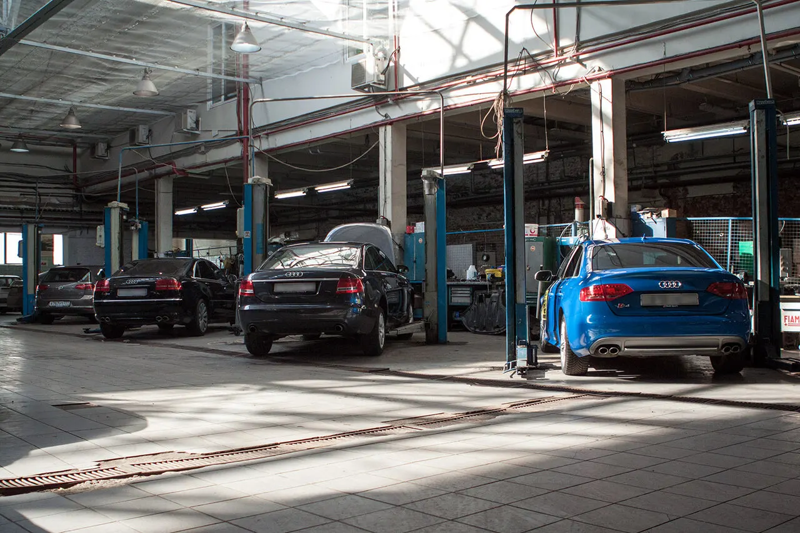
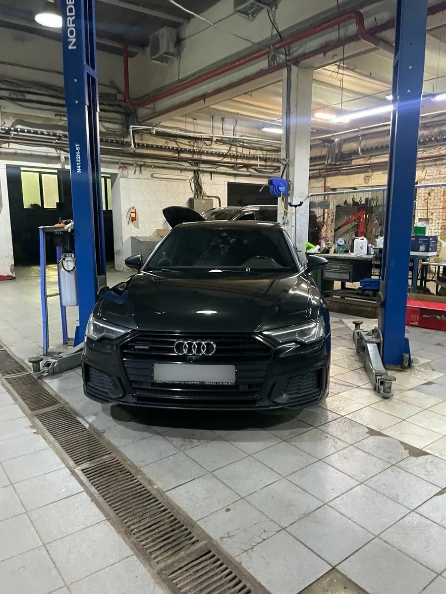
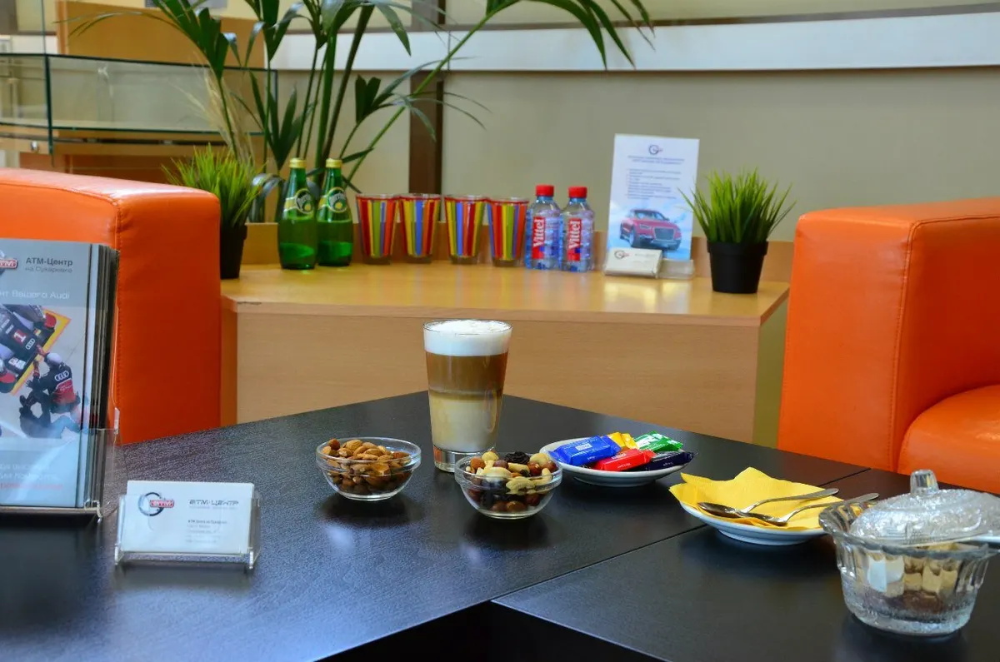
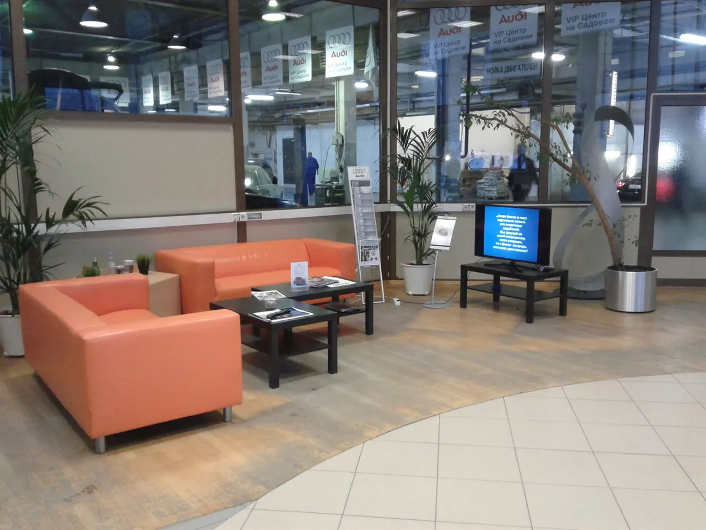

Автосервис и диагностика · Москва, у метро «Комсомольская»
Автосервис в центре Москвы: сначала диагностика и цена, потом ремонт
Диагностика, ТО, ремонт, сход-развал и шиномонтаж. Покажем, что срочно, а что может подождать, и назовём стоимость до начала работ.
- 4,6 на Яндекс.Картах, 159 отзывов
- «Хорошее место 2026» по версии Яндекс.Карт
- Ежедневно с 9:00 до 21:00

Цены с карточки на Яндекс.Картах
Цены ориентировочные: точную сумму для вашей машины назовём после диагностики или по телефону.
Диагностика
- Компьютерная диагностикабензиновые и дизельные автомобилиот 2 500 ₽
- Диагностика ходовой частиизнос деталей, посторонние шумыот 2 500 ₽
- Диагностика парктрониковот 5 000 ₽
Обслуживание
- Масляный сервисзамена масла и фильтра, сброс сервисного интервалаот 3 500 ₽
- Замена воздушного фильтраот 1 500 ₽
- Замена салонного фильтраот 2 000 ₽
- Замена свечей зажиганиякомплект из 4 свечейот 2 500 ₽
- Замена антифризаот 5 000 ₽
- Замена тормозной жидкостиот 4 500 ₽
- Обслуживание тормозных механизмовчистка и смазка суппортовот 4 500 ₽
- Промывка инжектораот 9 800 ₽
- Мойка радиаторов со снятиемуточнить
Кондиционер и электрика
- Заправка и диагностика кондиционерас ультрафиолетовым красителем для поиска утечкиот 5 000 ₽
- Антибактериальная обработка кондиционераот 4 750 ₽
- Регулировка света фарот 2 400 ₽
Колёса
- Сход-развалразвал, схождение, кастерот 7 500 ₽
- Ремонт колеса жгутомот 1 500 ₽
- Ремонт колеса заплаткойс балансировкойот 3 000 ₽
- Шиномонтаж колёсуточнить
Кузов и прочее
- Мойка кузова бесконтактнаякузов, арки и коврикиот 1 500 ₽
- Замена хомута глушителяот 1 500 ₽
- Обслуживание петель и замков дверейот 1 200 ₽
- Кузовной ремонт и покраскауточнить
Позиции со словом «уточнить» назовём по телефону или в WhatsApp. Что входит в каждую работу, объясним до начала.
Как это проходит
- 01
Записываетесь или приезжаете
Позвоните или напишите в WhatsApp. На карточке есть предварительная запись.
- 02
Диагностика и осмотр
Находим причину и показываем, что срочно, а что может подождать.
- 03
Называем цену
Работы и стоимость обсуждаем до начала ремонта, без навязывания лишнего.
- 04
Делаем и отдаём машину
Пока ждёте, зона ожидания с чаем и кофе. Оплата картой, наличными или безналом.



Почему к нам возвращаются
Объясняем, что и зачем
Клиенты в отзывах пишут, что мастера показывают, объясняют и не навязывают лишнего.
Берёмся за срочное
Если машина встала на ходу, постараемся принять в день обращения.
Иномарки и не только
Audi, BMW, Mercedes, Volkswagen, Toyota, Lexus, Škoda и другие, по отзывам делали и машины не из списка.
Зона ожидания
Чай, кофе, Wi-Fi и диваны, если хочется подождать на месте.
Отзывы с Яндекс.Карт
«Потрясающий сервис. От нас отказались 7 сервисов до этого. Нужен был срочный ремонт перед дальней дорогой. Не отказали. Встретили. Интеллигентные, вежливые, отзывчивые!»
Владислав Черныш · 21 февраля 2026
«Грамотные вежливые ребята, рекомендации тоже толковые. Посчитали быстро цены на ремонт и заказ запчастей, распечатали лист диагностики с полным перечнем и ценами работ и запчастей, все подробно, прозрачно и честно. Без навязывания доп. услуг.»
Клиент автосервиса · 22 декабря 2025
«Мастера свою работу знают, не навязывают дополнительные не нужные опции. Все по делу объясняют, помогут разобраться.»
Сергей М. · 22 июля 2025
Отзывы с карточки на Яндекс.Картах, без правок.
Частые вопросы
Где вас найти?
Москва, Грохольский переулок, 29, корп. 1. Это территория банка «Авангард», въезд со стороны «Страховой группы». От метро «Комсомольская» около 930 м.
Когда вы работаете?
Каждый день с 9:00 до 21:00, включая субботу и воскресенье.
Нужно ли записываться?
Лучше записаться по телефону или в WhatsApp. По отзывам, без записи тоже принимают, но ожидание может занять время.
Сколько стоит диагностика?
Компьютерная диагностика по карточке на Яндекс.Картах стоит от 2500 ₽. Точную сумму назовём после осмотра.
Что делаете, кроме ТО?
Ремонт ходовой, двигателя и тормозов, диагностика, сход-развал, шиномонтаж, ремонт кондиционеров, автоэлектрика, кузовной ремонт и покраска.
Чем можно оплатить?
Картой, наличными, банковским переводом, безналом. Есть дисконтная система скидок, подробности уточняйте при записи.
Записывайтесь, пока удобное время свободно
- Адрес
- Грохольский переулок, 29, корп. 1, Москва (территория банка «Авангард»), Москва
- Часы
- Ежедневно 9:00-21:00
- Телефон
- +7 (495) 777-68-00